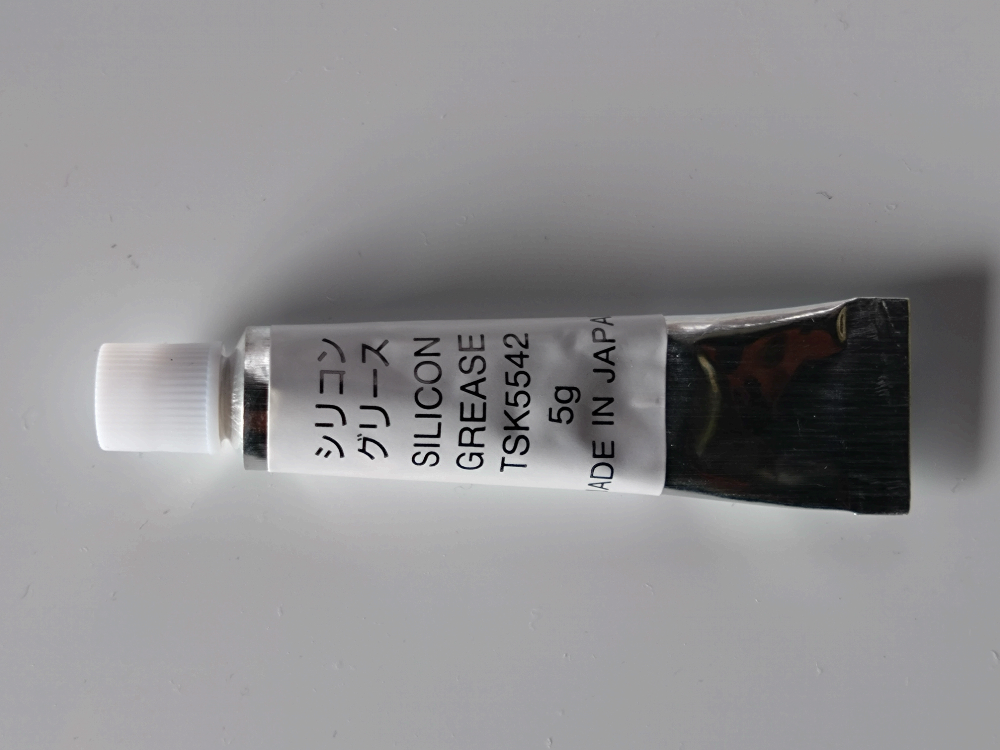
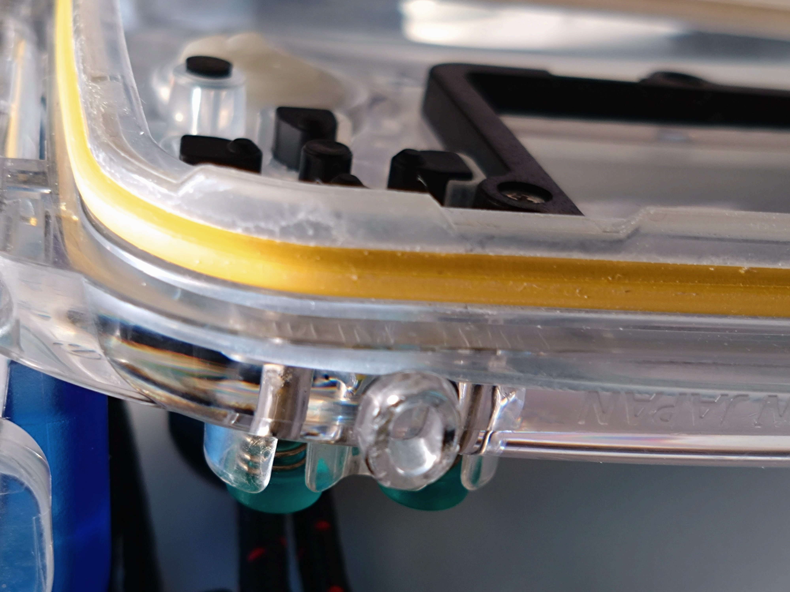
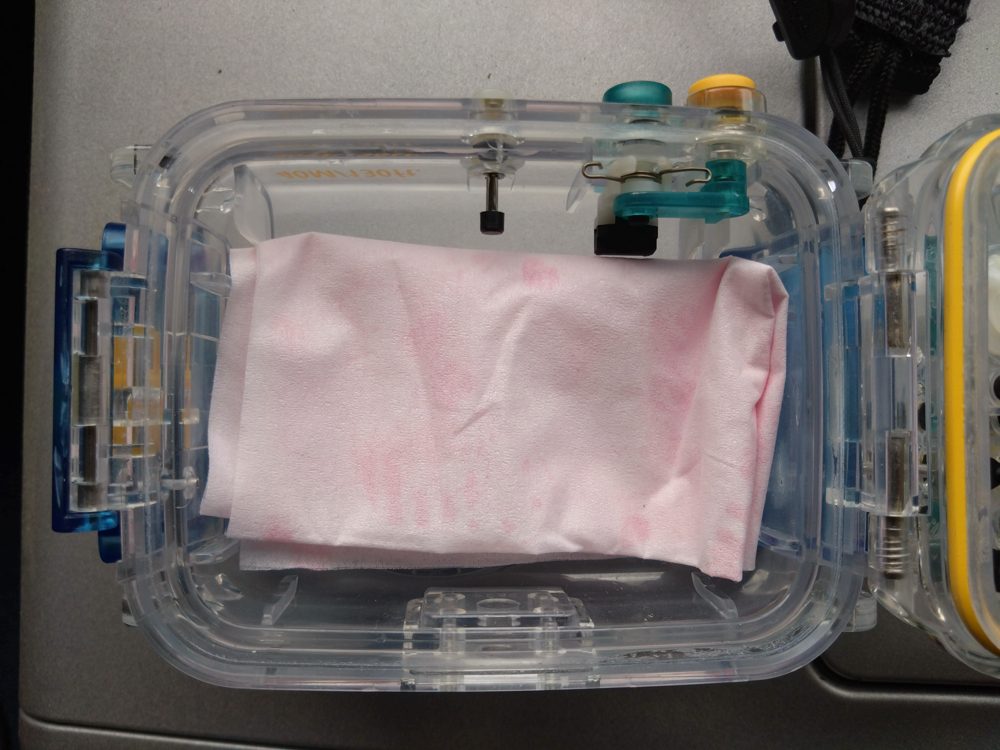
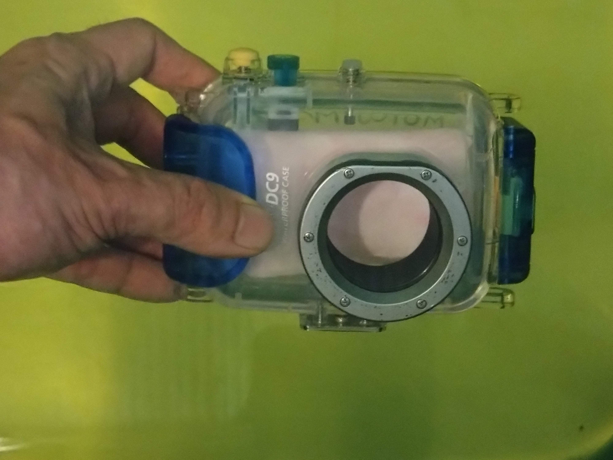
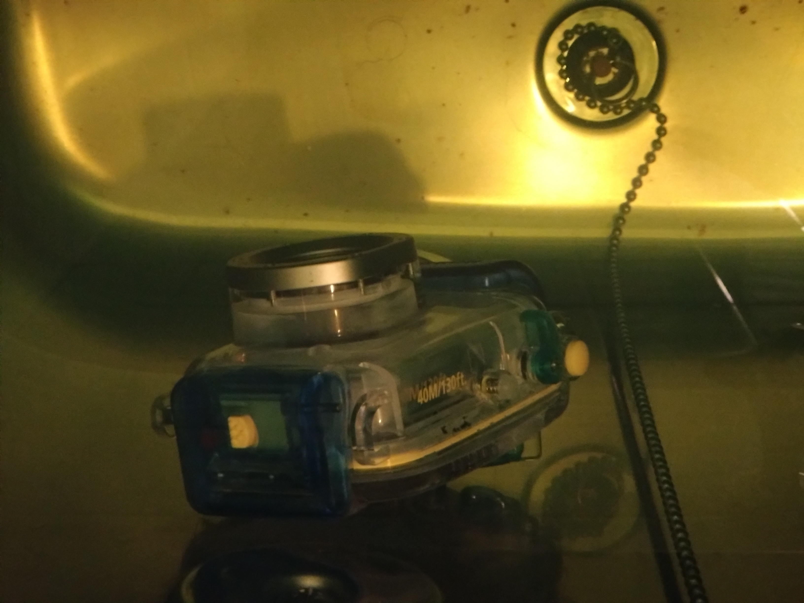
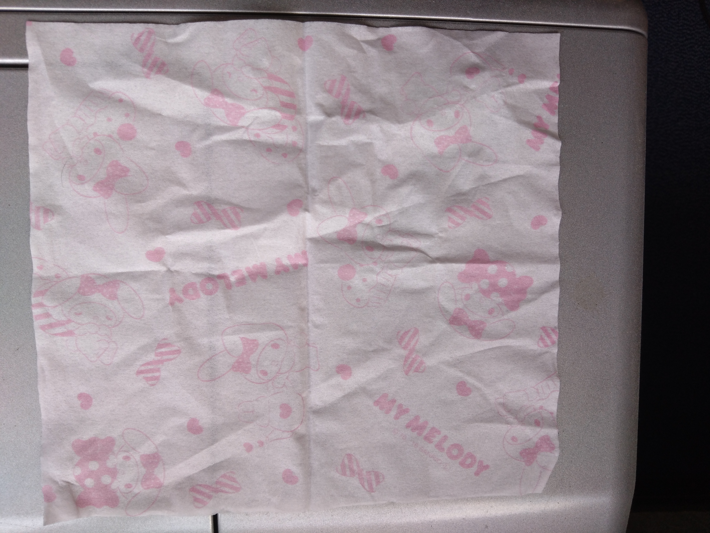

🏯 妄想博士の研究所
＞
📸 防水ハウジング研究
📸 防水ハウジング研究
ようこそ、防水ハウジング研究室へ！
この研究室では、
キヤノン IXE DIGITAL 900IS用防水ハウジングの
復活プロジェクトを載せていくぞょ！
━━━━━━━━━━━━━━━━━━
２０２６年春
衣替えの為に押し入れから夏服を引っ張り出していると、何か入った袋を見つけた。
「なんじゃ？！何が入っておるんじゃ？！」と袋を開けてみると、懐かしい物が出てきた。

キャノンIXY DIGITAL 900IS用防水ハウジング【WP-DC9】‼️
本体は壊れてしまったが、アウトドアで使うために一緒に購入したものである。
かれこれ２０年以上前の話じゃ。
当時は、今のようにスマホが無いころで、フイルムカメラからデジタルカメラに市場が移りつつある頃じゃ
「懐かしいのぅ…」と昔を思い出しながら、ふと「まだ使えるのか？！」とワシの心が躍り始めた。
外見にダメージは見受けられないが、防水ハウジングの命は読んで字のごとく「防水性能」じゃ。
ハウジングの防水性脳の要、Ｏリングを慎重に取り外してみた。

目立った傷や、ひび割れはとりあえず無い。

更に幸いなことにシリコングリースまで残っていた。
指先にほんの少しグリースをとり、Ｏリングに丁寧に塗っていく。
塗り終わったら、数日放置し、Ｏリングになじませる。

その後、ハウジングの溝へＯリングをはめ込んでいく。
とりあえずは、ここまで順調に進んだ。残るは【防水試験】じゃ！
ハウジングには、他にも、レバーやシャッターなどの防水部分が多数ある。
そちらが駄目ならこのハウジングはもう使えない。
耐圧テストとはいかぬが、とりあえず防水性を確認すべく浴槽に沈めてみることにした。

ハウジングにティッシュペーパーを畳んで入れ、僅かな漏水も確認しやすくした。
そして、ドキドキの防水テスト開始！
ゆっくりと水中へ沈めてみる。

細かい気泡が出てくる様子はない！！

引き続き、ハウジングを浴槽に沈め、１時間耐久テストをしてみた。
結果は……
漏水無し‼️

ハウジングに入れたティッシュペーパーも、濡れている様子は見られなかった。
耐水テスト成功である‼️
さて、久々に川へ行こうか海へ行こうか妄想が頭を巡るのであった。
ムホホホ！！
🧪 研究結果
📅 研究日：2026年8月5日
📸 装備：コンデジ用防水ハウジング
⭐ 評価：★★★★★
📂 研究No.0004
この記事が誰かの参考になれば嬉しいのぅ。
🏯 妄想博士
ワシの研究はまだ終わらん！
🏠 妄想博士の研究所へ戻る